1088C10 WATER PUMP - R + R
- Path
- Procedures > 10 ENGINE > 1088 ENGINE COOLING > 1088C WATER PUMP AND THERMOSTAT > 1088C10 WATER PUMP - R + R
- Kind
- repair procedure (removal / refitting; the operation number is the code)
- Applies to
- all engines; all production periods
- Interactive page
- https://sloeber94.github.io/elrnDB-aBrrSpdr/en/#/946002005
Applies to: engines: 3.2 JTS; all production periods
 Removing
Removing
 Refitting
Refitting- Position the vehicle on a lift.
Op. 4450B04 RIGHT FRONT WHEEL - R.R
Op. 7055B66 ENGINE COMPARTMENT DUST COVER IN RIGHT FRONT WHEEL ARCH - R.R.
Op. 7055B91 RIGHT FRONT WHEEL ARCH LINER - R.R.
Op. 1008B10 POWER UNIT FRONT SUPPORT FLEXIBLE MOUNTING (TIMING SIDE) - REPLACE
Op. 1008A46 POWER UNIT RIGID SUPPORT - TIMING SIDE - R.R.
Op. 1092G10 SINGLE ENGINE BELT - R.R
Op. 1088C22 WATER PUMP PULLEY - R.R.
1. Undo the bolts fixing the water pump to the timing drive chain cover.
- Remove the gasket.
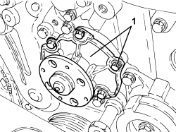
Applies to: engines: 3.2 JTS; all production periods
Refitting
Removing- Refit the water pump, complete with new gasket, in its housing and secure it using the bolts.
Component | Fastening | dia | Value (daNm) | Validity |
|---|---|---|---|---|
Water pump | Bolt | - | 1.0 | 3.2 JTS |
Op. 1088C22 WATER PUMP PULLEY - R.R.
Op. 1092G10 SINGLE ENGINE BELT - R.R
Op. 1008A46 POWER UNIT RIGID SUPPORT - TIMING SIDE - R.R.
Op. 1008B10 POWER UNIT FRONT SUPPORT FLEXIBLE MOUNTING (TIMING SIDE) - REPLACE
Op. 7055B91 RIGHT FRONT WHEEL ARCH LINER - R.R.
Op. 7055B66 ENGINE COMPARTMENT DUST COVER IN RIGHT FRONT WHEEL ARCH - R.R.
Applies to: engines: 2.2 JTS; all production periods
Removing
Refitting- Position the vehicle on a lift.
- Make sure that the ignition key is in the OFF position, then disconnect the battery terminal (-).
Description | Connector | |
|---|---|---|
- | Battery |
Op. 4450B04 RIGHT FRONT WHEEL - R.R
Op. 7055B66 ENGINE COMPARTMENT DUST COVER IN RIGHT FRONT WHEEL ARCH - R.R.
Op. 4410D16 BRACKET (ONE) RETAINING CHASSIS TO BODY - R R
(right side).
1. Undo the coolant drain plug in the water pump and drain the coolant.
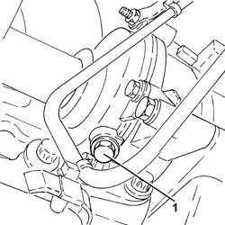
Applies to: engines: 2.2 JTS; all production periods
1. Disconnect the electrical connection from the engine coolant temperature sensor.
Description | Connector | |
|---|---|---|
1 | Engine coolant temperature sensor/sender unit |
2. Loosen the collar and disconnect the upper coolant input sleeve to the radiator, thermostat side.
3. Loosen the bands and disconnect the coolant delivery and return pipes to the climate control system heater, thermostat side.
4. Undo the engine coolant temperature sensor and remove it.
5. Undo the bolts (5a) and remove the thermostat (5b) complete with water pump rigid fluid inlet pipe (5c) and O-rings (5d).
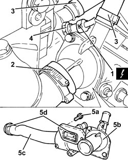
Applies to: engines: 2.2 JTS; all production periods
1. Loosen the nut fixing the electric wiring mounting bracket.
2. Undo the bolts (2a) and remove the water pump cover (2b), complete with seal.
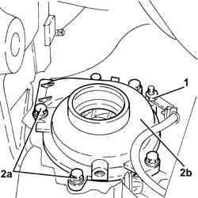
Applies to: engines: 2.2 JTS; all production periods
1. Undo the bolts (1a) and remove the water pump service cover (1b) from the timing chain cover.
2. Remove the gasket.
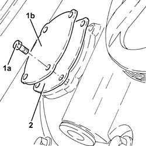
Applies to: engines: 2.2 JTS; all production periods
1. Fit the tool (1a) for securing the water pump drive pulley and fasten with two bolts (1b) to the timing chain cover and with three bolts (1c) to the water pump drive pulley.
Tool | Description | Function | Validity |
|---|---|---|---|
2000001200 | Flange | Locking water pump pulley | 1.9 JTS 2.2 JTS |
2. Undo the three bolts fixing the drive pulley to the water pump.
3. Undo the two bolts fixing the water pump to the engine block.
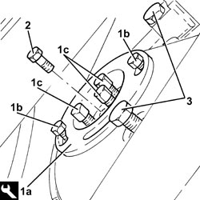
Applies to: engines: 2.2 JTS; all production periods
1. Undo the remaining bolt (1a) and remove the water pump (1b) complete with O-ring.
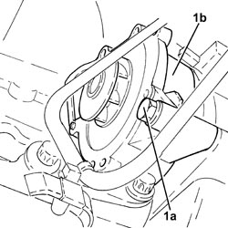
Applies to: engines: 2.2 JTS; all production periods
Refitting
Removing-Clean the surfaces of the water pump.
- Place the water pump, complete with new O-ring in its housing and secure it tightening the bolts to the recommended torque.
Component | Fastening | dia | Value (daNm) | Validity |
|---|---|---|---|---|
Water pump | Bolt | M8 | (engine block side) 2.3 | 1.9 JTS 2.2 JTS |
- Tighten the bolts fixing the drive pulley to the water pump to the recommended torque.
Component | Fastening | dia | Value (daNm) | Validity |
|---|---|---|---|---|
Water pump drive pulley | Bolt | M6 | (water pump side) 0.8 | 1.9 JTS 2.2 JTS |
- Remove the tool used for securing the water pump drive pulley.
Tool | Description | Function | Validity |
|---|---|---|---|
2000001200 | Flange | Locking water pump pulley | 1.9 JTS 2.2 JTS |
1. Place the water pump cover (1a), complete with a new seal, back in its housing and secure it tightening the bolts (1b) to the recommended torque.
Component | Fastening | dia | Value (daNm) | Validity |
|---|---|---|---|---|
Water pump cover | Bolt | M6 | (water pump side) 0.8 | 1.9 JTS 2.2 JTS |
2. Tighten the nut fixing the electric wiring mounting bracket.
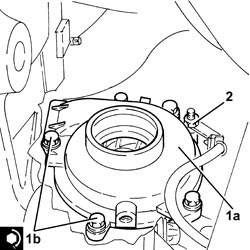
Applies to: engines: 2.2 JTS; all production periods
1. Tighten the coolant drain plug to the water pump to the recommended torque.
Component | Fastening | dia | Value (daNm) | Validity |
|---|---|---|---|---|
Drain plug on water pump | - | M20 | (water pump side) 2.0 | 1.9 JTS 2.2 JTS |
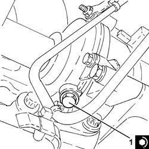
Applies to: engines: 2.2 JTS; all production periods
1. Place the water pump service cover (1a), complete with a new gasket, back in its housing and secure it tightening the bolts (1b) to the recommended torque.
Component | Fastening | dia | Value (daNm) | Validity |
|---|---|---|---|---|
Water pump service cover | Bolt | M6 | (front cover side) 0.7 | 1.9 JTS 2.2 JTS |
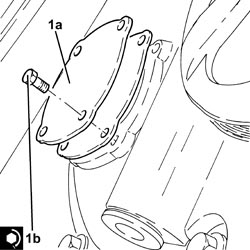
Applies to: engines: 2.2 JTS; all production periods
1. Place the thermostat (1a) complete with water pump rigid coolant inlet pipe (1b) and new O-rings (1c) back in its housing and secure it tightening the bolts (1d) to the recommended torque.
Component | Fastening | dia | Value (daNm) | Validity |
|---|---|---|---|---|
Thermostat unit | Bolt | M6 | (engine block side) 0.6 - 1.0 | 1.9 JTS 2.2 JTS |
2. Place the engine coolant temperature sensor in its housing and tighten it to the recommended torque.
Component | Fastening | dia | Value (daNm) | Validity |
|---|---|---|---|---|
Engine coolant temperature sensor | - | M12 | (thermostat unit side) 2.2 | 1.9 JTS 2.2 JTS 3.2 JTS |
3. Connect the coolant delivery and return pipes to the climate control system heater, thermostat side, and tighten the band.
4. Connect the upper coolant input sleeve to the radiator, thermostat side, and tighten the band.
5. Connect the electrical connection to the engine coolant temperature sensor.
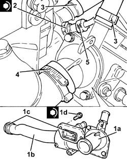
Applies to: engines: 2.2 JTS; all production periods
Op. 4410D16 BRACKET (ONE) RETAINING CHASSIS TO BODY - R R
(right side).
Op. 7055B66 ENGINE COMPARTMENT DUST COVER IN RIGHT FRONT WHEEL ARCH - R.R.
Op. 4450B04 RIGHT FRONT WHEEL - R.R
- Connect the negative battery terminal.
Op. 0010T20 ENGINE COOLANT - CHANGE
- Remove the vehicle from the lift.
Applies to: engines: 2.4 JTD 20v; all production periods
- On this car, it is not possible to remove/refit the water pump on the car.
To perform this operation, remove/refit the power unit
Op. 1004B10 POWER UNIT WITH MANUAL GEARBOX - R.R
and then work at the bench, customising the engine service procedures for this operation.
Topics linked from this page (12)
- 0010T20 ENGINE COOLANT - CHANGE
- 1004B10 POWER UNIT WITH MANUAL GEARBOX - R.R
- 1008A46 POWER UNIT RIGID SUPPORT - TIMING SIDE - R.R.
- 1008B10 POWER UNIT FRONT SUPPORT FLEXIBLE MOUNTING (TIMING SIDE) - REPLACE
- 1088C22 WATER PUMP PULLEY - R.R.
- 1092G10 SINGLE ENGINE BELT - R.R
- 4410D16 BRACKET (ONE) RETAINING CHASSIS TO BODY - R R
- 4450B04 RIGHT FRONT WHEEL - R.R
- 7055B66 ENGINE COMPARTMENT DUST COVER IN RIGHT FRONT WHEEL ARCH - R.R.
- 7055B91 RIGHT FRONT WHEEL ARCH LINER - R.R.
- A001 BATTERY
- K036 ENGINE COOLANT TEMPERATURE SENSOR/SENDER UNIT